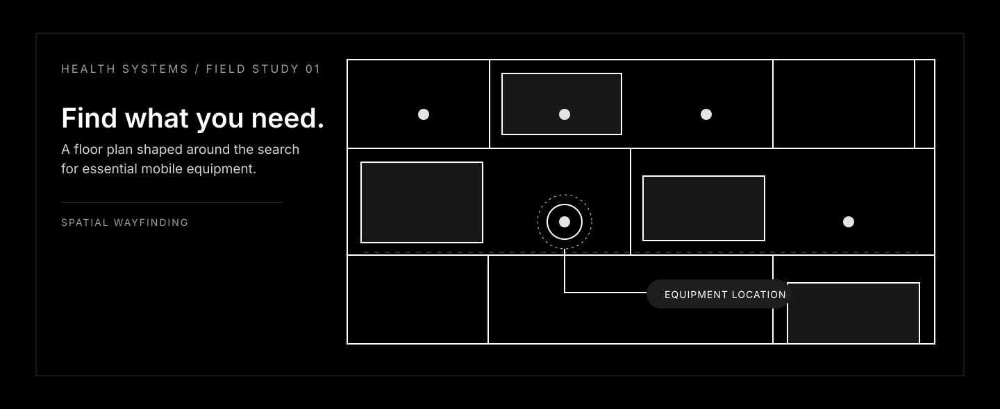

Predictive Ward Logistics Engine
An offline-first hospital telemetry prototype to locate critical infusion pumps in basement corridors without cloud reliance.
Diagnosis
Nurses in acute hospital wards spend up to 45 minutes every shift hunting for infusion pumps and telemetry monitors. When devices go missing, critical medication is delay...
Intervention
An offline-first progressive web application combining BLE beacon signal triangulation with local-first IndexedDB syncing. Caches NHS Trust floorplans and serializes tele...